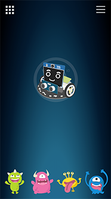

教學範例卡使用教學
教學範例卡是 Web:AI 為了各教育單位提供的程式範例，只要使用開發板掃描 QRcode，就能立即體驗 AI 人工智慧，並快速在課堂中演示範例。
教學影片
歡迎參考下方教學影片：
介紹
教學範例包含：
A. 人臉追蹤
B. 語音互動
C. 小怪獸追蹤
D. 口罩偵測
E. 登月小車追蹤小怪獸
F. 萬用遙控器控制登月小車
「登月小車追蹤小怪獸」及「萬用遙控器控制登月小車」範例需要搭配登月小車作使用。歡迎參考：MoonCar 登月小車。

使用教學
使用 Web:AI 開發板進入 QRcode 模式
關於如何進入 QRcode 模式，歡迎參考：操作模式: QRcode 模式。
拿出教學範例卡，翻到背面的 QRcode。

使用 Web:AI 開發板的鏡頭掃描卡片上的 QRcode。

掃描成功後即可使用教學範例！
A. 人臉追蹤
以人臉的五官來作為模型，經過機器學習後可以辨識出畫面中的人臉。
不限定人臉數量、會受到環境光線影響。

- 關於人臉追蹤，歡迎參考：人臉追蹤。
B. 語音互動
基於「語音辨識」的原理實現的語音互動，開發板中放入了男性、女性、Google 小姐等語音，偵測到聲音頻率變化而做出對應的效果。
包含 3 種不同互動，只要對著 Web:AI 說出「你好嗎？」、「自拍」、「你是誰？」，就會做出不同的互動效果
因為每個人的聲音模型都不同，如果偵測不靈敏，可以使用 Google 小姐來說出指令。
1. 你好嗎？
LCD 螢幕隨機顯示 1 隻小怪獸及情緒，並透過麥克風發出對應的音效。
2. 自拍
Web:AI 開發板開啟攝像鏡頭，對著自己拍一張照片並顯示在 LCD 螢幕上。
3. 你是誰？
夢想成為科技教具的 Web:AI 會自我介紹給大家聽！
- 關於語音辨識，歡迎參考：語音辨識。
C. 小怪獸追蹤
採用「物件追蹤」的技術辨識並追蹤 4 隻小怪獸，根據畫面中的小怪獸顯示資訊。
下載物件追蹤模型時：
範例小卡使用的小怪獸模型是預設在開發板中的物件追蹤模型，如果從 影像訓練平台 下載物件追蹤模型會將小怪獸模型覆蓋。
若是要再次使用，就需要將開發板回復韌體。
- 關於物件追蹤，歡迎參考：影像分類。
- 關於回復韌體，歡迎參考：初始化設定 ( 第一次使用請看這裡 )。
D. 口罩偵測
配合疫情時事，以人臉模型和配戴口罩的人臉模型做出的口罩偵測。
- 當偵測到人臉配戴口罩，顯示「安全！」。
- 當偵測到人臉未配戴口罩，顯示「危險！」。

- 關於口罩偵測，歡迎參考：人臉追蹤。
E. 登月小車追蹤小怪獸
登月小車結合「物件追蹤」技術，辨識 4 隻顏色的小怪獸，讓魔幻 LED 發出相對應顏色的光，並且依據 LCD 螢幕中小怪獸的位置來控制登月小車的前進、左轉、右轉，讓小車追著小怪獸行駛。

F. 萬用遙控器控制登月小車
想要直接操控登月小車嗎？
「 Webduino 萬用遙控器」可以直接滑動網頁中的小車圖案，用最簡單的方式控制小車的移動。
操作步驟
- 使用 Web:AI 開發板掃描「萬用遙控器控制小車 QRcode 」,進入「萬用遙控器控制小車」模式。
進入後可以看到螢幕顯示 QRcode 及「請用手機掃描」。

- 使用手機掃描螢幕上的 QRcode,進入 Webduino 萬用遙控器介面。
( 也可以直接點擊 Webduino 萬用遙控器 連結進入 )

點擊右上角選單按鈕,開啟設定畫面。
在「發送」欄位輸入 DeviceID/PING。
( 如：DeviceID 為 1a23b4，則是輸入 1a23b4/PING )
輸入完畢後，點擊右上角 ✕ 符號關閉,即可滑動中央的小車圖案來操控小車移動。